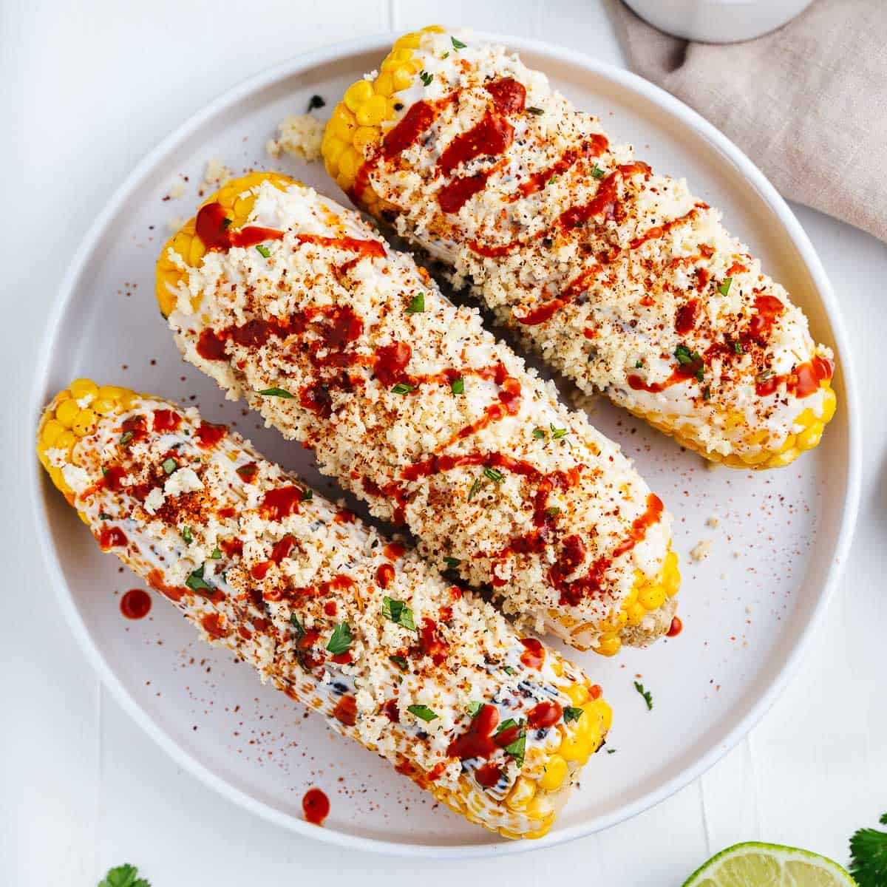

Mexican Corn

Above is a picture of our final dish (well, assuming all goes right and you add your own little twist!). Prepare your taste buds, this one is fun!
For this recipe, you will need (in no particular order):
- Corn (duh!)
- Garlic
- Mexican crema
- Mayo
- Lime juice
- Cojita cheese
- Cilantro - make sure it's fresh ;)
- Smoked paprika or chili powder